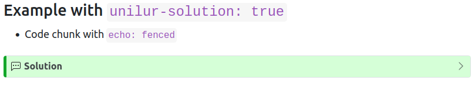

Reducing duplication in teaching materials
As a young, impressionable undergraduate, a Computer Science lecturer once told me:
If you use a value more than once, it should be a variable. Every time. Because, one time you will forget to change the third mention.
We’ve all done it. Whether it’s hard-coding a time period and then changing dataset, or whether it’s hard-coding a population size in a model that’s quoted on national television, we all do our best to keep code clean to avoid these kinds of pitfalls.
So why, then, does it seem like so many of us have at least two copies of every tutorial and assignment? One with just the questions, and one with the solutions on it? I understand that both types of files are required, at least until generative AI makes us fully change our assessment, but the idea of having two identical questions in two different files makes me very nervous.
In fact, earlier this year while teaching a unit for the second time, one of my tutors pointed out that the solutions had a different set of numbers in the question compared to the ones students were answering. Unfortunately, this also materially changed the interpretation of the answer, and so I had to go through, re-issue solutions and re-mark a pile of assignments.
At EBS, a large portion of the content for our units are managed through RMarkdown, in a reasonably standardised format. As a sign of the times, every time I inherit a unit, I try to port material over to Quarto. It just feels like the right thing to do. Given the ability for both of these systems to output multiple formats on render, I started thinking about how to have one master question file that could output both the student question set, and the full solutions at the same time.
A clunky first attempt
I spent a bit too much time starting at CSS and ad-hoc web development, even though the results are sometimes nice. When all you have is a hammer, everything looks like a CSS-based nail. Enter the chunk option:
```{r, echo=solutions}
library(readr)
covid_cases <- readr::read_csv("https://docs.health.vic.gov.au/covid19/data/NCOV_cases_by_postcode_LGA.csv")
```This is pretty straightforward. I set the variable solutions at the top of the file to be TRUE if I want solutions to be printed, and false otherwise. With a bit of fanangling, you could also pass this into params in the YAML at the top of the document, and then two calls to rmarkdown::render() with the relevant parameters would probably get you what you want. With a bit of styling:
```{css}
.solution {
padding: 10px;
border: 1px solid black;
margin-bottom: 5px;
}
.solution { background-color: #F9E79F; }
.solution::before {
font-weight: bold;
font-style: italic;
}
.solution::before { content: "Solution";}
```you can even make it look nice. It was a good first attempt, and saw me through for that semester. But, I still felt like there had to be a cleaner way, and something I could generalise to Quarto (which loses me the luxury of the rmarkdown::render() call).
Inheriting a solution
For the first time this year, I am running a subject on my own. As I can’t really do anything independently in my life, I set about borrowing all the relevant templates for the LMS and converting handbook entries. At some point, I should share the Moodle template - it really is something, even though it isn’t mine!
I was very fortunate. I inherited a very clean set of lecture notes from Emi Tanaka, that had even been ported to Quarto already. Bar some minor changes, I’ll teach this course as I got it in it’s first year, if for no other reason than so I can learn it fully!
While in my pre-semester prep, I noticed that the tutorials are still Rmd files. Nothing else in the course is, so why these I wondered?
It turns out, in what shouldn’t be surprise, someone else had already engineered this master-copy-to-2-outputs solution:
---
title: 'ETC5523: Communicating with Data'
subtitle: "Tutorial 1"
author: "Michael Lydeamore"
date: "Week 1"
output:
unilur::tutorial_html_solution:
toc: true
suffix: "-solution"
unilur::tutorial_html:
toc: true
suffix: "-question"
---The unilur package wsas designed for exactly this. I must say, it doesn’t look particularly active on GitHub, but nonetheless, it worked perfectly. With an extra argument to rmarkdown::render(output_format = "all"), two documents are produced, with the relevant suffixes on them. Brilliant!
The styling I inherited was a little egregious (I really can’t do white text on a green background), but it did the job. And no more multiple copies of files for me to royally screw up when I’m in a hurry.
The only problem is, it’s an Rmarkdown output format, not a Quarto one. And literally everything else in this course is Quarto. There’s even lectures dedicated to it. I stumbled upon a Quarto port, converting it to an extension, which was a great start. The system the author had gone with was to add a chunk option:
```{r}
#| unilur-solution: true
```combined with a YAML boolean show-solution: true, which you could change to generate the two files. I ported over the first tutorial reasonably quickly, and it performed almost as expected. I had nice expandable dropdowns for solutions:

The only problem was combining code chunks with text, which in a course all about how to explain your story, was quite important. This is because the only way to get a solution block to generate is with the chunk option, and so text solutions have to be enclosed in a block type. Embedding code chunks into a block… uh… block does work, but you lose syntax highlighting, and the ability to execute them if you want the solutions to actually compile.
The clunky solution to this is to have two solution blocks, and write the answer in such a way that the code comes after the text. I guess this is somewhat traditional, it’s certainly how I explained algorithms in my PhD thesis, but it is difficult for markers, and a bit jarring for students to have to jump around the page. Not quite as bad as figures at the end of a manuscript, but it has similar vibes. I don’t like it.
Diving into the extension
Like all Quarto extensions, the meat of what’s going on is in the _extensions/ folder. There’s a YAML file that gives defaults for what is added by the extension (which here is just a contributes for a LUA filter), some CSS, and a LUA filter. I can’t really write LUA, certainly not good LUA. My only experience of it is a terrible mod I made many years ago for Factorio, which as an aside is a brilliant game everyone should play.
But, I have enough CS experience and training to be able to read these things and clunk my way through them. Thankfully, this LUA filter isn’t particularly long. The Div function just checks if we’re in the right sort of thing (so a “cell”, and has the attribute unilur-solution == TRUE), and if it’s all good, spits out the solution. Otherwise, instead of returning the content (which would be el in this code), we return a totally empty element.
This means that extending the functionality to include a class is pretty easy. Just check if the class of the div (which for reasons unknown to me is always capitalised in LUA) is also called unilur-solution1:
if (el.classes:includes("cell") and el.attributes["unilur-solution"] == "true") or (el.classes:includes("unilur-solution")) then
... do stuff ...
This worked a treat. Now I can use a Pandoc fenced div to specify solutions with text and code, and the code is highlighted and executed exactly as it would be on a normal block. The system works like this:
::: unilur-solution
Here is a solution that is inside a div. The contents of this will only be shown
in the solution document.
:::
Now the last step: getting multiple documents to output from one master file, from one quarto render call.
Multiple formats at once
Quarto supports multiple format documents out-of-the-box, and for the most part, they work pretty well, minus a quirk with RStudio only rendering one of the formats. Use the CLI for that by the way, it works much cleaner.
There’s even support for formats with the same file extension so they don’t overwrite each other. Just add output-file to your YAML and you can generate two HTML files.
So this was looking pretty easy. I’ll just convert the extension to an output format, include it twice in the header of my tutorial and off we go. In case you ever need it, here’s how you can specify your own output format:
title: Unilur Questions
quarto-required: ">=1.3.0"
contributes:
format:
common:
filters:
- unilur.lua
show-solution: false
html:You set your document type as the folder your extension is in, plus the format you want. So in this case, I have:
format:
unilur-question-html:
output-file: tutorial-01-question.html
embed-resources: trueI forgot the -html the first time and caused myself a lot of pain.
Unfortunately you can’t have the same output format twice, just changing the YAML options. I don’t understand why, I won’t pretend to understand why, and in the kindest way, I don’t think I really want to understand why.
So, sadly, the solution was to have two almost identical extensions: unilur-question, which defaults show-solution: false, and unilur-solution, which defaults to the opposite. Still two files, I guess, but it ends up being not too bad.
The workflow
So now, it’s pretty straightforward. You can use the extension like any other Quarto extension2:
quarto install extension MikeLydeamore/unilurwhich will install both identical extensions. Set your YAML as per above, fence off your solutions using either the chunk option or the div, and quarto render your way to what is in my opinion, a much cleaner workflow.
The YAML header becomes:
format:
unilur-question-html:
output-file: tutorial-01-question.html
embed-resources: true
unilur-solution-html:
output-file: tutorial-01-solution.html
embed-resources: truewhich I think is pretty clean. It’s not quite the suffix tag that’s in the original extension, but I think I can live with that. If anyone knows a way to get the current name of the file in the YAML (or possibly elsewhere in extension-land), I’d love to hear it so I don’t need output-file anymore.
If you use this, or have other solutions, I’d love to hear about them. Please let me know however you see fit: Twitter, GitHub, or e-mail.
Footnotes
Quarto (and Rmarkdown for that matter) doesn’t have a LUA highlighter so you’ll have to read this one yourself.↩︎
Pending an open pull request↩︎